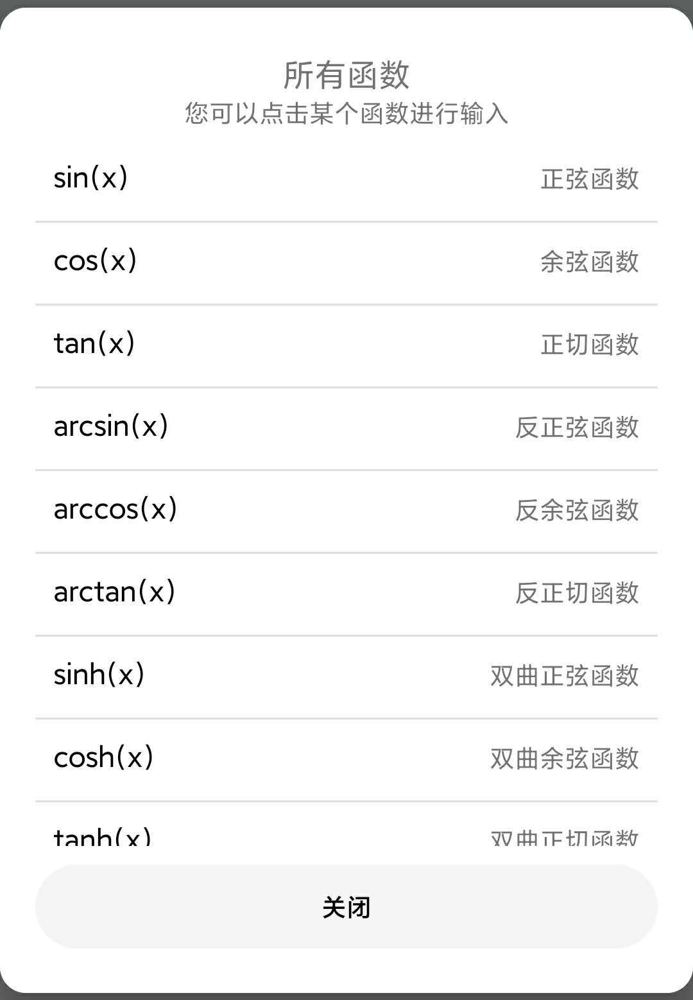

这是一款超级简单的 Android 计算器，是我的 Android 学习作品。
其中，设计和功能目标是 借(chao)鉴(xi)了小米自带计算器，(。・∀・)ノ 好吧不要喷我，我做这个app绝对不获利的，就是
学习一下 Android 开发，做一个玩玩（核心代码全部是我原创的）。
其中全部采用安卓原生实现，您如果感兴趣的话可以访问
github.com/imengyu/AutoCalc 下载源码。
这个计算器实现了几个功能：
与普通计算器相差不大，这里不做过多说明了，上图显示了功能按钮的位置。
本计算器使用 Double 进行计算，对于数学计算，可能会精度丢失。精度大致为小数点 10~15 位。
本计算器四则运算使用 BigDecimal 进行计算，您可以在设置中指定精度。
计算的值范围，超过则会显示无限大（∞）：
您可以点击 “手动输入算式” 按钮输入自定义算式进行计算，但请注意，此计算对算式非常敏感，您在输入算式的时候格式必须正确，千万不要忘记任何一个括号。
您可以输入算式例如：
1+4*(6-2)+8/3
sin(2*pi)+cos(1)
hex(0x8F+0x0A)
本计算器支持一些数学和逻辑函数，您可以点击 “菜单”>“所有函数” 查看函数定义，点击一个函数可以输入到计算器上。
点击 “切换模式”>“程序员” 可以切换到程序员模式，支持一些基本的逻辑运算。
点击 “转换器” 可以切换到转换器模式，支持一些基本的逻辑运算。
再次点击按钮可选择要转换的数据类型，点击左边的单位按钮可以选择当前数据的单位。
点击左边的数字可以选择当前在上或下输入数据（显示橙色），输入数据后另外一条会自动转换数据并显示。
如果您有任何建议或发现 BUG ，欢迎给我们反馈。
微信：imyzc_dream_or_chase
邮箱：1501076885@qq.com
Github：imengyu/AutoCalc
by 梦欤
Copyright © 2020
邮箱：1501076885@qq.com
Github：imengyu/AutoCalc
主页：https://imengyu.top
好吧，没有其他功能了，看制作者有没有闲时，如果有的话可能会再加一些有意思的东西。